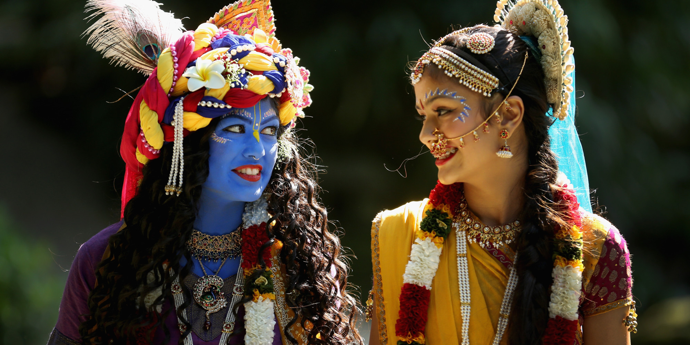

Krishna Janmashtami Festival
Events for Culture and Society Assignment by Klaudia, Imesha and Temi
Events for Culture and Society Assignment by Klaudia, Imesha and Temi

The Krishna Janmashtami was originally held in India but with time, the event has now become a festival that is celebrated all over the world in different places. This is the process whereby a cultural activity which was in the past observed as a regular season undergoes reconfiguration to become a new event. In the UK, the event is celebrated at BAPS Swaminarayan mandir as well as other centres across the nation (Bennet et al., 2016). To the Hindu, Lord Krishna birth symbolises love, divinity as well and righteousness. In addition, on the day of the festival, divine joy becomes manifest. Also it brings devotees together to worship the Hindu God of gods. Lastly, it directs how people should live through the observation of principles such as the significance of fulfilling one's duties without focusing much on the outcome.
The vast majority of the Krishna Janmashtami events maintain authentic and traditional practices and activities, catering to the Hindu communities rather than commodifying the cultural experience (Bennet et al., 2016).